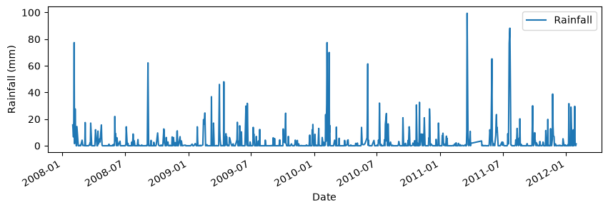

This walkthrough uses Rain in Australia to practise a workflow you can adapt to HW8: identify separate time series, inspect their spacing, understand a future target, establish a persistence baseline, and compare calendar and lag features.
We keep a classification task: predict whether it will rain tomorrow. In HW8, you will adapt these ideas to regression and a weekly forecast horizon.
Run the cells in order. Download the dataset from here and place weatherAUS.csv in a data folder beside this notebook.
At the end of each measurement day, predict RainTomorrow at the same location. We assume that day’s listed measurements are available at this time. In deployment, publication delays and the exact observation windows would need checking.
The target is categorical, so we use classification. We predict one day at a time: measurements arrive between predictions, while the fitted model stays fixed during each validation period. This is different from predicting an entire month’s rain at its beginning.
Several locations can have observations on the same date. Inspect repeated dates, then check whether (Location, Date) uniquely identifies an observation. In another dataset, you may need a combination of categorical columns to identify each series.
A series identifier does not establish that observations are independent or that geographic categories do not overlap. Nearby weather stations can share weather patterns. In other datasets, labels can mix cities, larger regions, and national totals.
Pause: What evidence would you inspect before adding measurements across geographic labels? Look at the labels and any dataset documentation; where meaningful, compare candidate totals with their components.
Inspect spacing within each series
Sort within each location before taking date differences. A difference across the whole dataframe could cross a location boundary.
Date
1 days 25757
2 days 7709
3 days 2349
4 days 685
5 days 216
6 days 50
7 days 15
8 days 2
9 days 3
10 days 2
11 days 1
31 days 24
32 days 9
33 days 8
34 days 3
35 days 1
37 days 1
Name: Number of gaps, dtype: int64
min
max
Location
Hobart
1 days
37 days
Wollongong
1 days
35 days
Portland
1 days
34 days
Bendigo
1 days
34 days
Cobar
1 days
34 days
PerthAirport
1 days
33 days
BadgerysCreek
1 days
33 days
Penrith
1 days
33 days
Nuriootpa
1 days
33 days
Tuggeranong
1 days
33 days

Understand shifts and the future target
The file supplies RainTomorrow. To understand how a future target can be constructed, take the next row’s RainTodaywithin the same location. Also shift its date so we can check the forecast horizon.
Pandas uses shift(1) for the previous observation and shift(-1) for the next observation. HW8’s create_lag_feature helper uses the opposite sign convention in its lag argument: negative = past, positive = future. Inspect the helper rather than assuming its signs match pandas.
A future value can define a target; it must not enter the predictors.
Comparable next-day observations: 25324
Agreement with supplied target: 1.0
Location
Date
RainToday
RainTomorrow
PreviousRainToday
NextRainToday
NextDate
ConstructedRainTomorrow
8
Adelaide
2008-07-10
Yes
No
Yes
NaN
2008-07-12
NaN
11
Adelaide
2008-07-14
Yes
Yes
NaN
No
2008-07-16
NaN
14
Adelaide
2008-07-18
Yes
NaN
No
Yes
2008-07-21
NaN
17
Adelaide
2008-07-23
No
No
No
No
2008-07-25
NaN
18
Adelaide
2008-07-25
No
NaN
No
No
2008-07-28
NaN
The date check prevents calling a later observation “tomorrow” when days are missing. Any disagreement with the supplied target warrants investigating the dataset’s definitions and missing-value handling. This is an illustration only: we retain the supplied RainTomorrow for modeling and keep these demonstration columns out of the model data.
A previous observation is not always yesterday’s observation. We will construct yesterday’s measurement by matching the exact date and location. We do this before removing missing targets: a row without a target can still contain an observed measurement useful for the next day’s prediction.
The merge uses only past measurements. If yesterday is missing, the lag remains missing; it does not silently substitute a measurement from several days ago. We will impute missing predictors inside each training fold.
Establish a holdout and validation folds
Use the first 80% of observed dates for development and the remaining dates for a final holdout. This adapts to the date range in the local CSV. How would ordinary TimeSeriesSplit behave if several rows share the same date?
Splitting rows can place different locations from the same date on opposite sides of a boundary. Instead, split unique dates, then map each date window back to rows. All locations on a date stay together. This evaluates future predictions at the locations represented in our data; it does not evaluate transfer to unseen locations.
Show chronological holdout and date-based validation folds
all_dates = np.sort(rain["Date"].unique())cutoff = pd.Timestamp(all_dates[int(0.8*len(all_dates)) -1])train = rain.loc[rain["Date"] <= cutoff].sort_values(["Date", "Location"]).reset_index(drop=True)test = rain.loc[rain["Date"] > cutoff].sort_values(["Date", "Location"]).reset_index(drop=True)# Apply the target-availability gap before constructing positional fold indices.train = train.loc[train["Date"] < test["Date"].min() - pd.Timedelta(1, unit="D")].reset_index(drop=True)assertnot train.empty andnot test.emptyy_train, y_test = train["RainTomorrow"], test["RainTomorrow"]dates = np.sort(train["Date"].unique())folds = []for fit_dates, valid_dates in TimeSeriesSplit(n_splits=3).split(dates): fit_rows = np.flatnonzero(train["Date"].isin(dates[fit_dates])) valid_rows = np.flatnonzero(train["Date"].isin(dates[valid_dates]))# RainTomorrow for date d is not known until the following day.# Leave a day between the last training feature date and validation origin. first_validation_date = train.iloc[valid_rows]["Date"].min() fit_rows = fit_rows[(train.iloc[fit_rows]["Date"] < first_validation_date - pd.Timedelta(1, unit="D")).to_numpy()]assertlen(fit_rows) >0andlen(valid_rows) >0assert train.iloc[fit_rows]["Date"].max() < first_validation_date - pd.Timedelta(1, unit="D") folds.append((fit_rows, valid_rows))print(train.iloc[fit_rows]["Date"].max().date(), "→", first_validation_date.date())
The extra gap conservatively allows the next day’s outcome to become available before fitting. The exact gap should reflect the observation and publication schedule in the real application.
Establish two baselines
A majority baseline always predicts the most frequent training class. A persistence baseline predicts tomorrow’s rain using today’s RainToday. If today’s value is missing, we use the most frequent training value.
For a numeric target, persistence means predicting the next value with the current value, then evaluating with a regression metric such as r2_score(y_next, y_current). Here we use classification metrics: accuracy and balanced accuracy. Balanced accuracy averages recall across the classes and helps reveal how a majority baseline performs on an imbalanced target.
class PersistenceClassifier(ClassifierMixin, BaseEstimator):"""Predict tomorrow's class using today's observed class."""def fit(self, X, y):self.classes_ = np.unique(y)self.fill_value_ = X["RainToday"].mode().iloc[0]returnselfdef predict(self, X):return X["RainToday"].fillna(self.fill_value_).to_numpy()baselines = {"Majority baseline": DummyClassifier(strategy="most_frequent"),"Persistence baseline": PersistenceClassifier(),}results = {}for name, model in baselines.items(): results[name] = cross_val_score( model, train[["RainToday"]], y_train, cv=folds, scoring="balanced_accuracy")display(pd.DataFrame(results, index=["Fold 1", "Fold 2", "Fold 3"]).T)
Fold 1
Fold 2
Fold 3
Majority baseline
0.500000
0.500000
0.500000
Persistence baseline
0.684743
0.659733
0.650066
Compare calendar encodings and historical features
Keep the classifier and validation folds fixed while changing the features:
Current measurements only.
Current measurements plus numeric month.
Current measurements plus one-hot month.
Current measurements plus one-hot month and yesterday’s measurements.
For logistic regression, numeric month contributes a linear term to the log odds: moving from January to February has the same modeled increment as moving from November to December. It also fails to represent December and January as neighbors in a seasonal cycle. One-hot encoding lets each month have a separate effect. The same limitation applies to numeric time of day in a linear regression model. Sine/cosine encoding is another possible approach, beyond this comparison.
The ColumnTransformer below selects predictors explicitly. The target and any other columns are excluded; in particular, if the local CSV includes RISK_MM (next-day rainfall), it must never be a predictor.
Month is known in advance and may capture seasonal differences. We encode it categorically rather than imposing a linear increase from January to December. Location lets one model use data across stations, although this additive logistic model does not automatically learn location-specific seasonal effects.
Lag features provide yesterday’s measurements, while today’s rainfall and humidity are already present. The lags may add little once current measurements are included. Their usefulness is an empirical question, not a guarantee.
NotePause and discuss
Do the feature additions improve every validation fold, or only the average?
Would yesterday’s observed humidity remain available if we forecast an entire month in advance?
Why would grouping by location before shift(1) still be insufficient to guarantee a one-day lag?
Grouping prevents crossing locations, but only a date check or an exact date match establishes the elapsed interval. Observed future-period measurements are available in this repeated one-day setup, not for a whole month forecast at once.
History at the train/test boundary
We created historical predictors before splitting. That lets the first test date use an earlier observed measurement from the training period. It also lets later test dates use measurements that have arrived since the test period began, consistent with our repeated one-day prediction task.
Creating lags separately within train and test would discard available history at the boundary. Using future measurements would leak information. Imputation, scaling, and model fitting remain inside the pipeline and use only each fold’s training rows.
Evaluate the selected approach
Select using validation balanced accuracy, then inspect the final holdout once. Small validation differences may be unstable; simplicity and consistency across periods matter too.
best_name = validation["Mean"].idxmax()selected = models[best_name]X_train = train[["RainToday"]] if best_name in baselines else trainX_test = test[["RainToday"]] if best_name in baselines else testselected.fit(X_train, y_train)predictions = selected.predict(X_test)print("Selected:", best_name)print(f"Holdout accuracy: {accuracy_score(y_test, predictions):.3f}")print(f"Holdout balanced accuracy: {balanced_accuracy_score(y_test, predictions):.3f}")
This estimate describes future dates at the observed locations under our information-availability assumptions. A different forecast horizon, a new location, or a change in measurement practices would require a different evaluation design.
The main adaptations were to define the prediction timing, split by dates, account for target availability, and match lag measurements within location by elapsed time. The classification pipeline itself remained familiar.
Transfer this workflow to HW8
Before modeling a new time-series dataset, explain:
Series: Which column or combination of columns identifies one sequence? Can geographic labels overlap?
Spacing: Are dates unique and equally spaced within each sequence? What does one row shift mean?
Task: What is the forecast horizon, how is the future target constructed, and which measurements are available when predicting?
Baseline: What does “the next value equals the current value” predict? Which metric fits the target type?
Features: How will you compare date encodings and past measurements using the same evaluation periods?
Evaluation: Do training dates precede validation dates, are training targets available at fitting time, and is the final holdout reserved for the selected approach?
A useful feature need not improve every dataset. Report the comparisons and justify the choices using evidence.